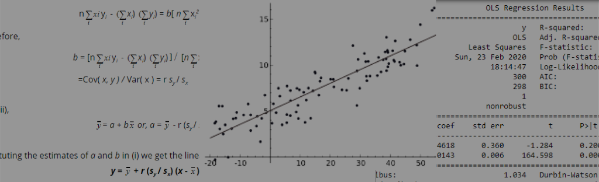
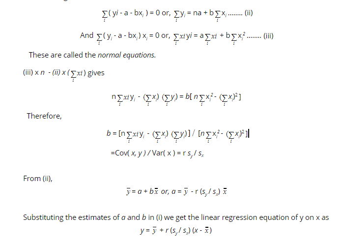

Linear Regression is a machine learning algorithm based on supervised learning. It performs a regression task. It is mostly used for finding out the relationship between variables and forecasting. This blog gives a brief idea of the two different regression algorithms and how they are derived mathematically using normal equations.
Data on two variables recorded simultaneously for a group of individuals are called bi-variate data. Examples of bi-variate data are heights and weights of the students in a class, the rainfall and the yield of paddy in a state for several consecutive years, etc.
When we have bi-variate data, we can, no doubt, consider the values of each variable separately to know the different measures like the mean and standard deviation of the variable; but here we are mainly concerned with two other problems. Firstly, we want to study the nature and extent of association, if any, between the variables. Secondly, if the variables are found to be associated we express one of them (regarded as the dependent variable) as a mathematical function of the other (considered as an independent variable), so that we can predict the value of the dependent variable when the value of the independent variable is known. The first problem is called correlation analysis and the second, regression analysis. To find the relationship between continuous correlated variables we use linear regression. Linear regression looks for a statistical relationship between a set of correlated values. The representation is a linear equation that combines a specific set of input values (x) the solution to which is the predicted output for that set of input values (y). As such, both the input values (x) and the output value are numeric. When there is a single input variable (x), the method is referred to as simple linear regression. When there are multiple input variables,the method is referred to as multiple linear regression.
Let the linear regression equation of y on x be
Since, we would like to use this equation for prediction purposes,, the constants a and b have to be estimated on the basis of observed values of x and y. Suppose we are given n pairs of values , (xi, yi), i = 1(1)n, of x and y. From among different methods that are available for the determination of a and b, we use the method of least squares which has many desirable properties.
When x=xi, the observed value of y is yi and the predicted value of y is a+bxi. So,
This ei is the error in taking a + bxi for yi. This is called the error of estimation. The method of least squares requires that a and b be so determined that
Whence we get,

The quantity r (sy / sx), usually denoted by byx , is called the regression coefficient of y on x. It gives the increment in y for unit increase in x.
The modelling of the simple linear regression equation is there on my github!
Polynomial Regression is a form of linear regression in which the relationship between the independent variable x and dependent variable y is modeled as an nth degree polynomial. Polynomial regression fits a nonlinear relationship between the value of x and the corresponding conditional mean of y, denoted E(y |x). Polynomial Regression is used to overcome the problems of under fitting of data found in simple linear regression.
The linear equation used earlier :
is now converted to
This is still considered to be linear model as the coefficients/weights associated with the features are still linear. x² is only a feature. However the curve that we are fitting is quadratic in nature. The equation of Polynomial Regression can be generalized as (up to nth degree):
This blog covers preliminary concepts of Linear and Polynomial Regression. Logistic Regression shall be covered in the next blog.
23-02-2020